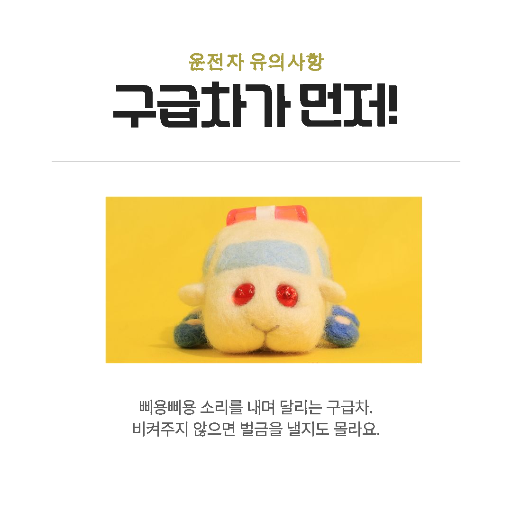
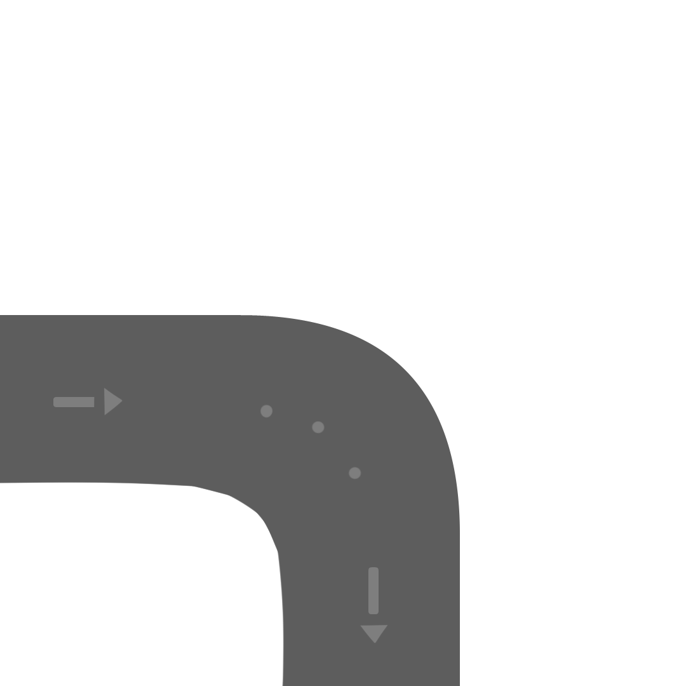
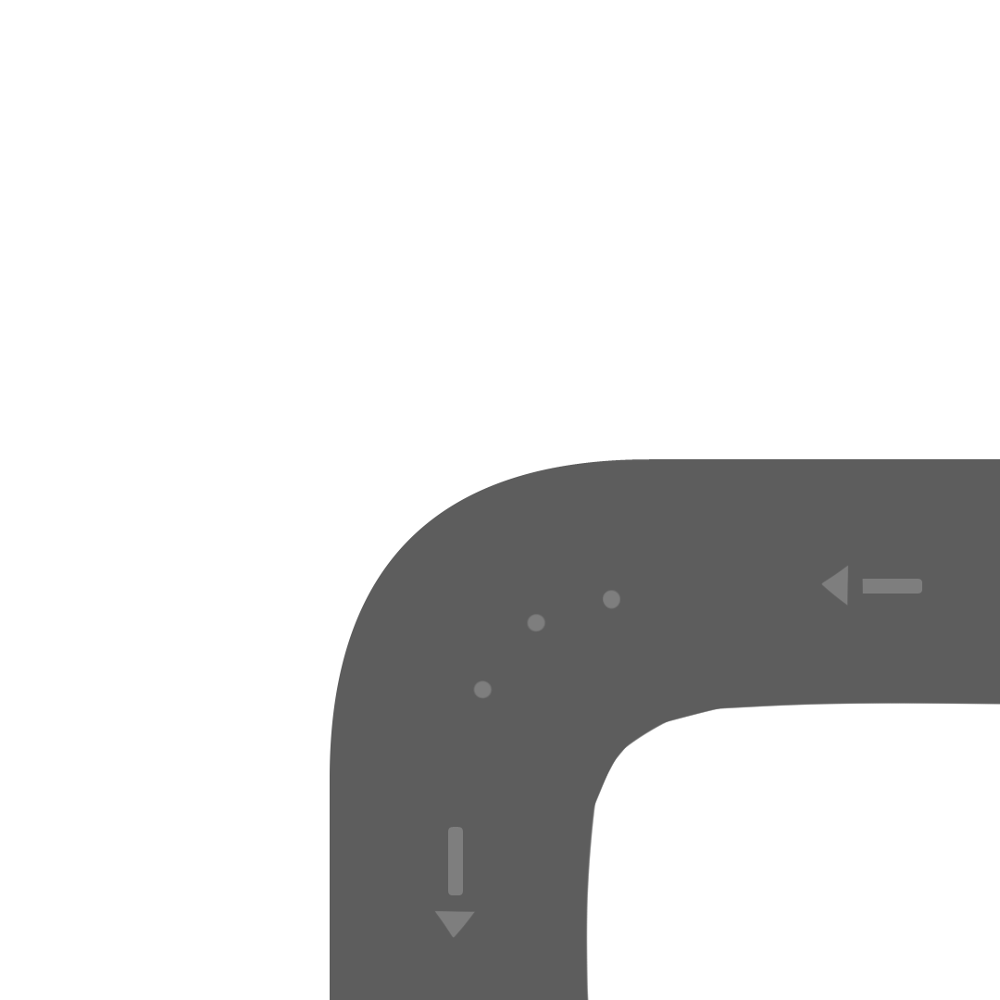
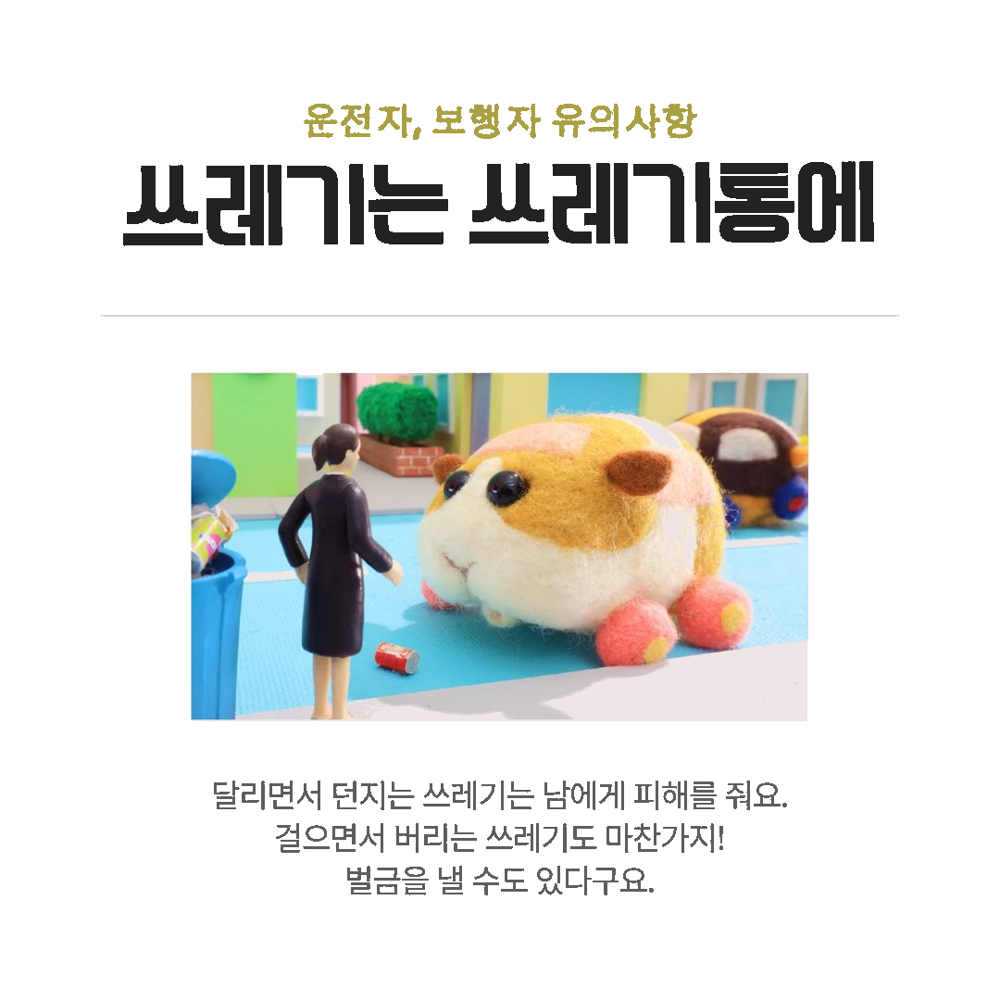
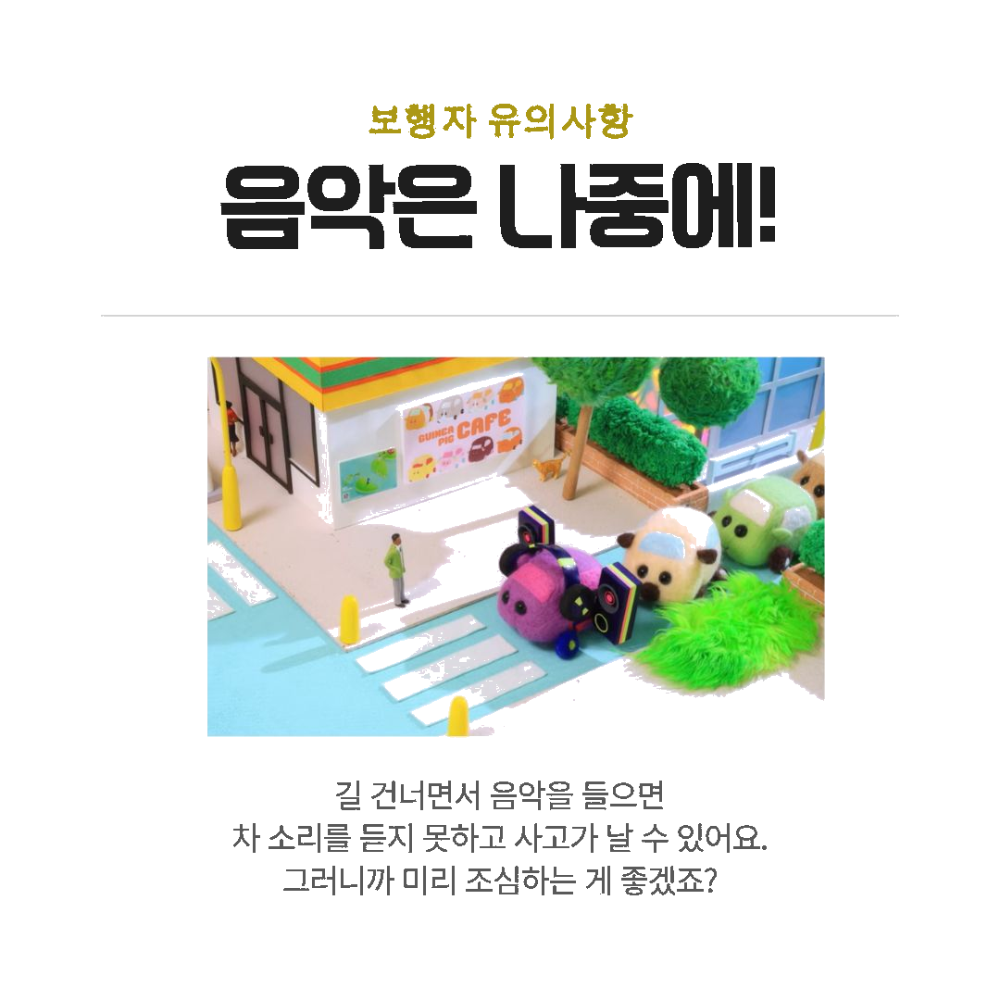

|  | 도로교통법 제49조에 따르면 모든 차량은 긴급자동차에 대해
신속하고 안전하게 양보할 의무가 있습니다. 이를 위반하면 과태료, 벌금이 부과됩니다. |
 |
|  |  | 도로교통법 제68조에 따라 20만원 이하의 벌금이나 구류,
또는 과료에 처한다고 안내되어 있습니다. 쓰레기 뿐만 아니라 병과 돌 등도 위험요소로 판단되니 조심하세요. |
|  | 보행 시 음악을 들으면 사고 위험이 급격하게 증가합니다.
특히 노이즈 캔슬링을 활성화 하고 다니면 경적음을 들을 수 없겠죠. 동아일보에서는 보행 중 교통사고 발생 현황에서, 휴대전화를 사용하는 비율이 61.7%나 된다고 알려졌습니다. |